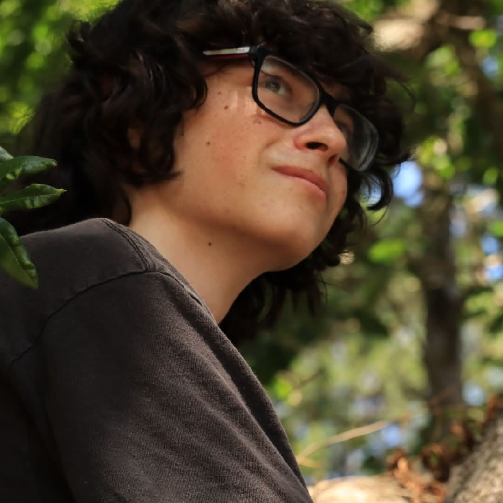
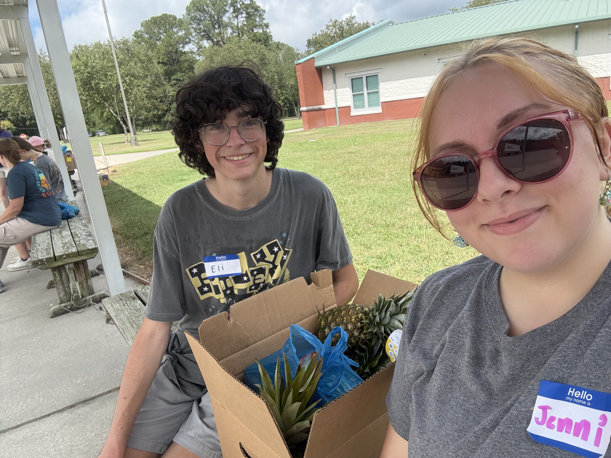
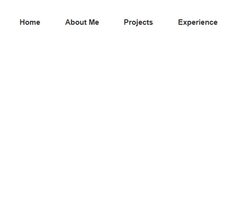

Hello, my name is Eli! In 2026, I graduated from Pender Early College High School with my associates in science from Cape Fear Community College. I am now a student at East Carolina University, with an intended graduation year of 2028. From a young age, I enjoyed programming small projects whenever I could. My experiences have led me to become quite passionate about programming and computing as a whole. Now, I seek out a career in computer science as an ECU student and scholar.
In my free time I like to play video games, mainly Overwatch, Deadlock, and Minecraft (which I sometimes like to code plugins for). I also enjoy listening to rock or metal music and going to concerts. On saturday nights I like to take a trip down to my local game store to play the card game Magic: the Gathering with other fellow nerds.
Feel free to check out my Projects Page for some highlights of my work! I also recommend looking at my experience page for information on my work and career relevant experience.
Feel free to check out my Projects Page for some highlights of my work! I also recommend looking at my experience page for information on my work and career relevant experience.

